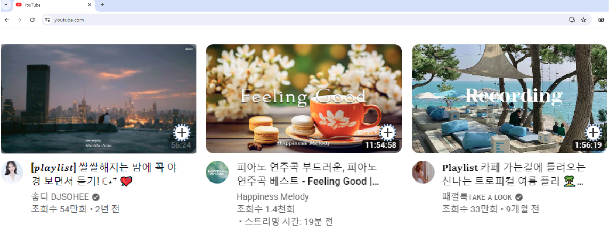
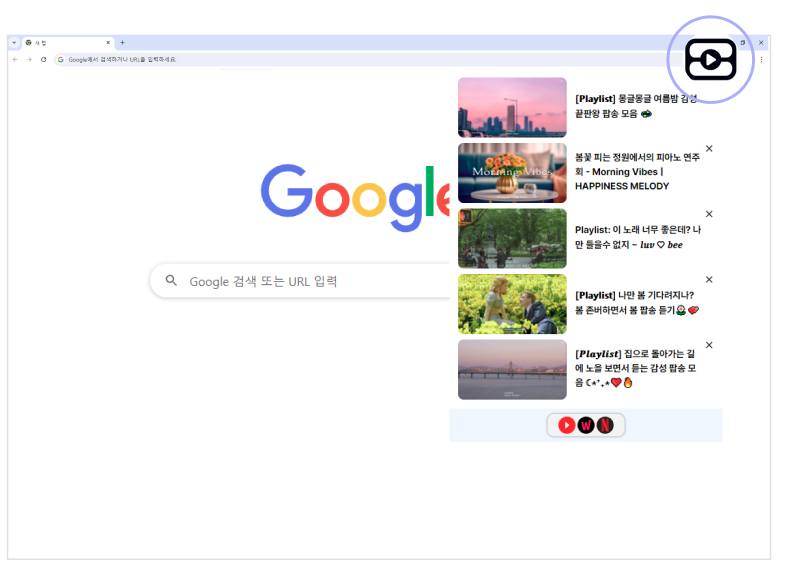
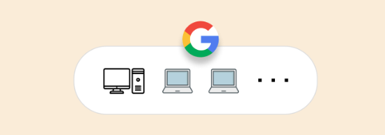

watchmark
다양한 플랫폼의 웹 콘텐츠를 하나의 도구로 관리하세요
Chrome 에 추가하기자동으로 추가되는 버튼을 통해 관심 콘텐츠를 등록할 수 있습니다.
웹 스토어에서 watchmark 를 추가한 후
Youtube, Watcha, Netflix 페이지에 접속하면
찜하기 버튼이 생성됩니다.

언제든 관심 콘텐츠로 이동할 수 있습니다.
크롬 브라우저의 우측 상단의 확장 프로그램 팝업창을 통해
작업중인 화면에서 한번에
관심 콘텐츠로 이동할 수 있습니다.

관심 콘텐츠 목록 동기화
서로 다른 기기에서 접속하더라도
구글 아이디를 통해 동기화가 적용됩니다.
기존에 찜한 목록을 볼 수 있고,
수정 사항은 공유됩니다.
